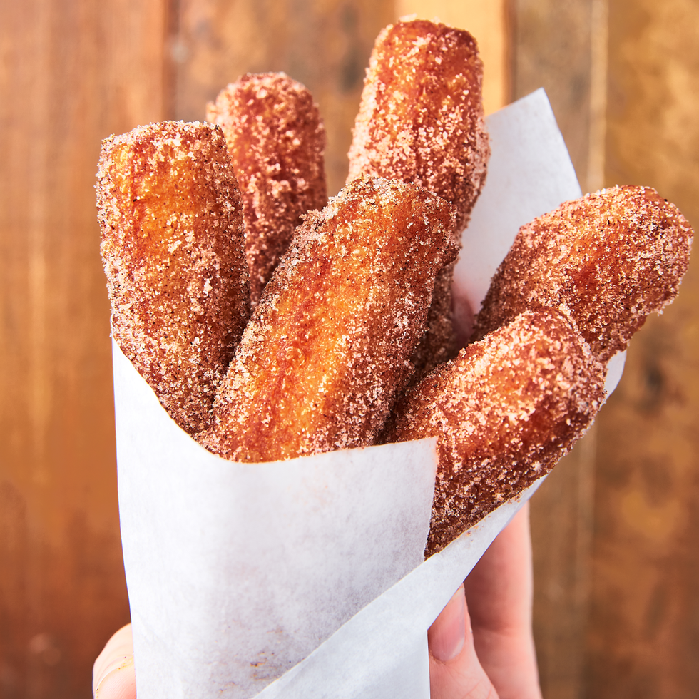

Churros

As the grand finale to your night, relish the sweetness of Abuela's
cherished postre El Delicioso 🍪 Churros.
These golden delights, crispy on the outside and pillowy soft inside, are
a nostalgic nod to the heartwarming traditions of family and good food.
Ingredients
For the Churros
- 1 c. water
- 6 tbsp. butter
- 2 tbsp. granulated sugar
- 1 tsp. pure vanilla extract
- 1 c. all-purpose flour
- 1 tsp. kosher salt
- 2 large eggs
- Vegetable oil, for frying
- Cinnamon sugar
For the Chocolate Dipping Sauce
- 3/4 c. dark chocolate chips
- 3/4 c. heavy cream
- 1 tsp. ground cinnamon
- 1/4 tsp. kosher salt
Directions
-
Make churros: In a large saucepan over medium heat, add water, butter,
and sugar. Bring to a boil, then add vanilla. Turn off heat and add
flour and salt. Stir with a wooden spoon until thickened, 30 seconds.
Let mixture cool for 10 minutes.
-
To cooled mixture, using a hand mixer, beat in eggs one at a time until
combined. Transfer mixture to a piping bag fitted with a large open star
tip.
-
In a large pot over medium heat, add enough oil to come halfway up the
sides and heat to 375°. Holding the piping bag a few inches above the
oil, carefully pipe churros into 6" long ropes. Use kitchen scissors to
cut off dough from piping bag.
-
Fry until golden, 4 to 5 minutes, turning as necessary. Fry 3 to 4
churros at a time and let oil come back to 375° before each batch.
Remove churros with a slotted spoon or tongs and immediately roll
churros in cinnamon sugar, then place on a cooling rack.
-
Make chocolate dipping sauce: Place chocolate chips in a medium
heatproof bowl. In a small saucepan over medium heat, bring heavy cream
to a simmer. Pour hot cream over chocolate chips and let sit 2 minutes.
Add cinnamon and salt and whisk to combine.
- Serve churros with chocolate dipping sauce.
It's important to note that the 10 minute cooling time before frying is
very important. Your batter will stiffen as it cools, allowing it to fry
better!